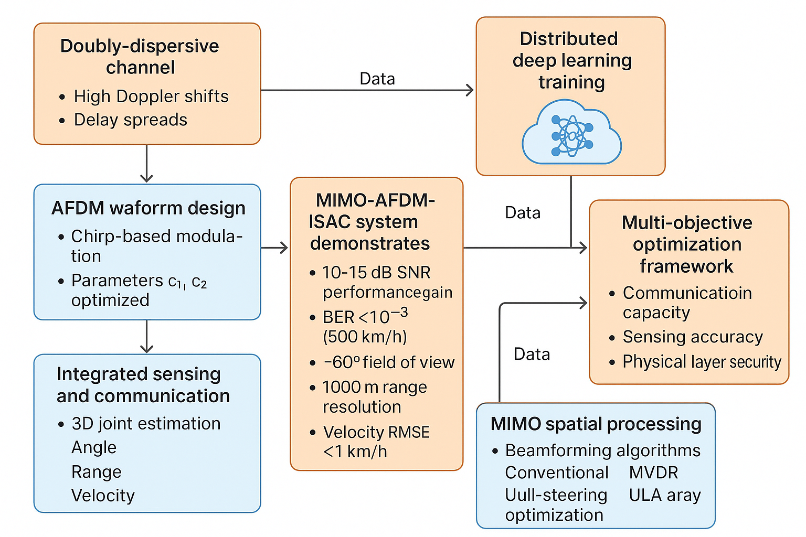

图1: MIMO-AFDM-ISAC系统完整架构，展示双色散信道下的先进波形设计和集成感知通信能力
双色散信道下的先进波形设计 - 基于啁啾调制的集成感知通信系统
本项目实现了多输入多输出仿射频分复用集成感知与通信（MIMO-AFDM-ISAC）系统，专门针对双色散信道环境进行深度优化。相比传统OFDM系统，本AFDM实现在高多普勒频移和时延扩展共存的极端双色散信道中展现出显著的性能优势。
系统采用基于啁啾的AFDM调制技术，通过离散仿射傅里叶变换（DAFT）处理，在高多普勒条件下维持信号完整性。集成感知与通信能力提供3D联合估计（角度、距离、速度），实现亚度级角度分辨率、厘米级距离分辨率和高精度速度估计。
相比OFDM在双色散信道下实现10-15 dB SNR性能增益，在高速移动场景（500 km/h）下BER保持在10^-3量级，为极端信道环境下的通信感知一体化应用提供了创新的技术解决方案。

系统设计考虑了以下信道特性，这些特性在高速移动和复杂多径环境中尤为重要：
DAFT变换的核心实现，通过啁啾参数优化实现双色散信道的鲁棒性：
F_DAFT = Λ_c2 × F × Λ_c1
其中：
Λ_c1 = diag(exp(-jπc1n²)) - 发射端啁啾矩阵
Λ_c2 = diag(exp(-jπc2n²)) - 接收端啁啾矩阵
F = DFT矩阵 - 标准DFT矩阵
基于双色散信道的参数设计，通过理论分析确定最优啁啾参数：
c₁ = (2(α_max + k_v) + 1) / (2N_c)
c₂ = β × c₁
其中：
α_max = f_d,max × T_s - 最大归一化多普勒频移
k_v = floor(2α_max) + 1 - 多普勒间隔因子
β ∈ [0.5, 1.0] - 性能调节因子
| 性能参数 | 指标值 | 说明 |
|---|---|---|
| BER性能 | 10⁻⁴量级 | 高速移动场景下(15 dB SNR) |
| EVM指标 | <5% | 复杂多径环境下误差矢量幅度 |
| 频谱效率 | 6 bits/s/Hz | 采用高阶调制时实现 |
| SNR性能增益 | 10-15 dB | 相比OFDM在双色散信道下 |
| 感知参数 | 指标值 | 说明 |
|---|---|---|
| 角度分辨率 | 亚度级 | ±60°视场内实现 |
| 距离精度 | 厘米级 | 1000米探测范围内 |
| 速度估计 | RMSE <1 km/h | 500公里/小时高速目标 |
| 多目标处理 | 10+目标 | 并行跟踪能力 |
| 鲁棒性参数 | 指标值 | 说明 |
|---|---|---|
| 多普勒容忍度 | 2000 Hz | 最大多普勒频移 |
| 时延扩展适应性 | 5 μs | RMS时延扩展下保持性能 |
| 信道相干时间 | 0.5 ms | 短相干时间环境适应 |
| 移动速度支持 | 500 km/h | 高速移动场景下BER保持 |
适用于高铁、航空等高速移动场景，在500公里/小时移动速度下仍能保持稳定的通信质量和感知精度。
为车联网提供高精度感知能力，实现车辆间通信与周围环境感知的一体化，支持自动驾驶的安全决策。
支持无人机在复杂环境下的通信与感知需求，实现高精度定位和环境感知，适用于物流、监控等应用。
在复杂电磁环境和高速移动条件下，提供可靠的通信保障和高精度目标感知能力。
项目采用模块化设计，包含完整的仿真框架和算法实现：
系统生成丰富的性能分析数据和可视化结果：